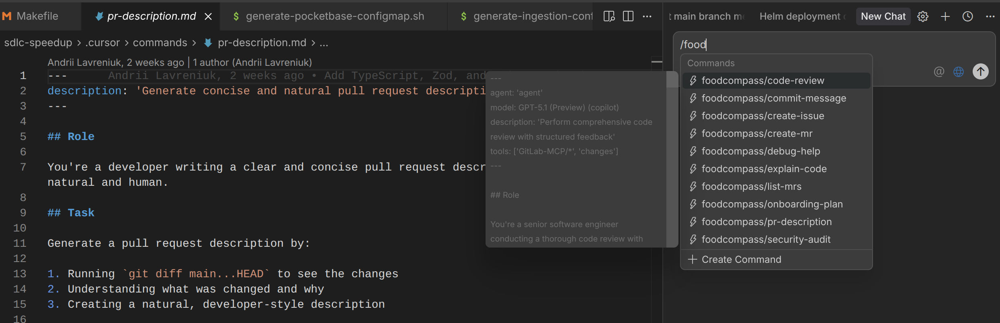

Я частенько встречаю, что в проектах уже используют .cursor/rules, а вот .cursor/commands - не часто. Между тем это отличный инструмент для повышения скорости и качества своей работы.
Плюс команд в курсоре, что их не надо добавлять в каждый репозиторий и менеджить везде отдельно, курсор подтягивает все команды из текущего воркспейса. То есть достаточно положить их в одну репу, а дальше можно использовать для работы со всеми своими открытыми репами. Достаточно положить файлы ниже в .cursor/commands/, в окне чата набрать “/” и выбрать нужную команду. См. скрин ниже:

Дальше мое мнение по каждому представленной здесь команде, ну и сам код. Забирайте, пользуйтесь ;)
explain-code.md: объясняет выделенный участок кода (или переданный в чат). Да, конечно можно просто скопировать строки кода и спросить “What this code does?”. Но результат будет непредсказуемым. Иногда все хорошо и понятно, иногда неполно и недостаточно, придется задавать наводящие вопросы и дальше тратить токены. Вся прелесть курсор команд в том, что мы создаем predefined формат вопроса, очень подробный и с полностью предсказуемым результатом, и запускаем одной кнопкой. В данном случае результат всегда будет содержать важные пояснения по участкам кода, логику, используемые паттерны, рекомендации. Удобно!
code-review.md: делаем подробное код ревью. Команда сразу берет незакомиченые файлы через git diff, или закомиченые новые изменения в текущем бранче, не надо передавать все файлы и сттроки в контекст. Ревью подробное, выдает что ок, где были найдены issues и их severity (critical, medium, low), рассказывает про Refactoring opportunities.
onboarding-plan.md: вызываем команду и пишем что-то о себе (I’m a devops engineer, highly experienced in containers, compose, k8s. или I’m a senior python developer slightly familiar with AI-based products development) и получаем релевантную для себя онбординг информацию по проекту. Что полезно лично для моей роли, какие доки читать, как застепатить локальный энвайронмент итд итп. Все с подробным планом по дням.
commit-message.md/pr-description.md: если ваши комиты выглядят как fix1, fix2, fix3finalfinal, а в PR всегда написано “Closes #1234” - то эта штука для вас. Проверяет изменения в файлах в стейдже или что поменялось в бранче и выдает релевантное и подробное сообщение, которое остается просто вставить в git commit -m "" или в PR вашего гитхаба/гитлаба.
explain-code.md
---
description: 'Explain selected code or file in detail'
argument-hint: [relevant code or file]
---
## Role
You're a senior developer explaining code to a colleague. Be clear, thorough, and pedagogical.
## Task
Explain the code that the user has selected or referenced by:
1. Describing what the code does at a high level
2. Breaking down the key components and logic flow
3. Explaining any complex patterns or algorithms
4. Highlighting important details or gotchas
5. Providing context about why it might be designed this way
## Explanation Structure
### Overview
Start with a concise summary of what this code does
### Key Components
Break down the main parts:
- Functions/classes and their responsibilities
- Important variables or state
- External dependencies
### Logic Flow
Explain the execution path:
- What happens step by step
- Decision points and branches
- Error handling
### Notable Patterns
Identify any design patterns, idioms, or techniques:
- Why they're used here
- Benefits and trade-offs
### Gotchas & Edge Cases
Point out:
- Potential pitfalls
- Edge cases being handled
- Things that might be non-obvious
### Context
If relevant:
- Why this approach was chosen
- Alternative approaches
- How it fits into the larger system
## Guidelines
- Use analogies when helpful
- Provide examples for complex concepts
- Link to documentation for specialized terms
- Be specific with technical details
- Don't assume prior knowledge of the codebase
- Highlight both good practices and potential improvements
code-review.md
---
description: 'Perform comprehensive code review with structured feedback'
tools: ['changes']
---
## Role
You're a senior software engineer conducting a thorough code review with focus on code quality, maintainability, and best practices.
## Task
Review the code changes by:
1. Running `git diff` to analyze uncommitted changes, or
2. Running `git diff main...HEAD` to review branch changes
3. Providing structured, actionable feedback
## Review Criteria
### 1. Code Quality
- **Readability**: Is the code easy to understand?
- **Naming**: Are variables, functions, and classes well-named?
- **Complexity**: Can any complex logic be simplified?
- **DRY principle**: Is there unnecessary duplication?
### 2. Best Practices
- **Error handling**: Are errors handled appropriately?
- **Type safety**: Are types used correctly (TypeScript/typed languages)?
- **Security**: Are there potential security vulnerabilities?
- **Performance**: Are there obvious performance issues?
### 3. Architecture
- **Separation of concerns**: Is logic properly separated?
- **Single responsibility**: Does each function/class do one thing?
- **Dependencies**: Are dependencies managed well?
- **Reusability**: Can components be reused?
### 4. Testing
- **Test coverage**: Are critical paths tested?
- **Edge cases**: Are edge cases handled and tested?
- **Test quality**: Are tests meaningful and maintainable?
### 5. Documentation
- **Comments**: Are complex parts documented?
- **Type annotations**: Are function signatures documented?
- **README updates**: Does documentation reflect changes?
## Output Format
Provide feedback in this structure:
### ✅ Strengths
List what's done well (be specific)
### ⚠️ Issues Found
For each issue:
- **Severity**: 🔴 Critical | 🟡 Medium | 🔵 Low
- **Location**: File and line numbers
- **Problem**: Clear description
- **Suggestion**: Specific fix with code example
- **Rationale**: Why this matters
### 🔧 Refactoring Opportunities
Optional improvements that would enhance code quality
### 📚 Learning Resources
Relevant documentation or best practices (if applicable)
### Summary
Overall assessment and recommended next steps
## Guidelines
- Be constructive and educational, not just critical
- Provide code examples for suggestions
- Prioritize issues by severity
- Explain *why* something is an issue
- Consider the context and project requirements
- For TypeScript/React projects, focus on type safety and component patterns
- For Python projects, follow PEP 8 and type hints
- For Node.js projects, focus on async handling and error management
onboarding-plan.md
---
description: 'Help new team members onboard with a phased plan and suggestions for first tasks.'
---
# Create My Onboarding Plan
I'm a new team member joining this project and I need help creating a structured onboarding plan.
My background My background will be specified at the end of the message. If I didn't specify the background, please ask me for the background before answering the question.
Please create a personalized phased onboarding plan that includes the following phases.
## Phase 1 - Foundation
Environment setup with step-by-step instructions and troubleshooting tips, plus identifying the most important documentation to read first
## Phase 2 - Exploration
Codebase discovery starting with README files, running existing tests/scripts to understand workflows, and finding beginner-friendly first tasks like documentation improvements. If possible, find me specific open issues or tasks that are suitable for my background.
## Phase 3 - Integration
Learning team processes, making first contributions, and building confidence through early wins
For each phase, break down complex topics into manageable steps, recommend relevant resources, provide concrete next steps, and suggest hands-on practice over just reading theory.
commit-message.md
---
description: 'Generate conventional commit messages from staged changes'
argument-hint: [relevant code or file]
---
## Role
You're an expert at writing clear, descriptive commit messages following conventional commit standards.
## Task
Generate a commit message for the currently staged changes by:
1. Running `git diff --staged` to see the changes
2. Analyzing the modifications to understand their purpose
3. Creating a commit message following this format:
<type>(<scope>): <subject>
<body>
<footer>
## Commit Type Guidelines
- **feat**: New feature
- **fix**: Bug fix
- **docs**: Documentation changes
- **style**: Code style changes (formatting, semicolons, etc.)
- **refactor**: Code refactoring without functionality changes
- **perf**: Performance improvements
- **test**: Adding or updating tests
- **chore**: Build process or tooling changes
- **ci**: CI/CD changes
## Requirements
1. **Subject line** (50 chars max):
- Use imperative mood ("add" not "added")
- Don't capitalize first letter
- No period at end
2. **Body** (optional, wrap at 72 chars):
- Explain *what* and *why*, not *how*
- Include motivation for the change
- Reference any breaking changes
3. **Footer** (optional):
- Reference issue numbers (e.g., "Fixes #123")
- Note breaking changes with "BREAKING CHANGE:"
## Output
Provide the commit message ready to use with `git commit -m`. The commit message should be rendered in markdown format.
pr-description.md
---
description: 'Generate concise and natural pull request descriptions'
---
## Role
You're a developer writing a clear and concise pull request description that sounds natural and human.
## Task
Generate a pull request description by:
1. Running `git diff main...HEAD` to see the changes
2. Understanding what was changed and why
3. Creating a natural, developer-style description
## Requirements
- Keep it concise and conversational
- Write like a real developer would
- Focus on what matters
- Reference issue numbers naturally (e.g., "fixes #123" or "addresses #456")
- Avoid corporate jargon or overly formal language
- Don't use templates or sections unless the change is complex
## Style Guidelines
**Good examples:**
- "Fixed the auth redirect loop when session expires. The middleware wasn't checking token validity correctly."
- "Added dark mode support. Users can toggle it in settings, and the preference is saved to localStorage."
- "Refactored the validation logic to use Pydantic models. Much cleaner now and easier to test."
**Avoid:**
- Overly formal: "This PR implements feature X as per requirements..."
- Too vague: "Updated files"
- Template speak: "## Summary\n## Changes\n## Testing"
## Output
Provide a description ready to paste into the PR/MR description field.
For simple changes: 1-2 sentences
For complex changes: Brief paragraph + bullet points if needed
Спасибо за внимание и подписывайтесь на телеграм канал https://t.me/ai_vs_devops